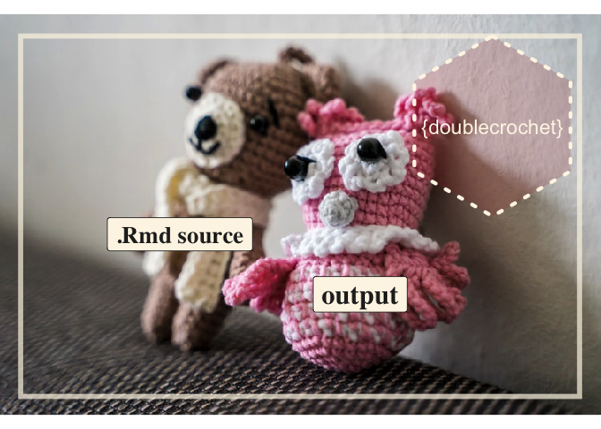

Rmarkdown files are so cool. They let you to combine prose, code, and code output in a single output file. And getting up and running with .Rmds is pretty easy — learn bit about code chunks, a bit of markdown and you are good to go.
But there is a lot that you can do in .Rmds beyond the basics. So you may feel .Rmd admiration and wonder at the products of more advanced users. How did they to that?
Or maybe as an advanced user you might get asked: How did you produce those slides, poster, dashboard etc.? You can answer ‘xaringan’ or ‘knitr’, but can you deliver ‘the how-to goods’ in a detailed way when you get this question?
The goal of doublecrochet is to help produce a complementary output from your .Rmd – one that has .Rmd source snippets quoted close to the rendered output.
The package is experimental, and now focused a case where there are natural breakpoints – slideshows! Quoted source is presented on a slide, then the rendered content is shown.
Check out doublecrochet’s in action below. The first set of slides is a slide show of ‘Cool Xaringan Stuff’, and the second is the Double Crochetted version that quotes the slide source.
Compare …
Cool Xaringan Stuff Open in New tab
… with the Double Crocheted version
Cool Xaringan Stuff Double Crocheted View in new tab:
Motivation
Inspiration for this project was creating Easy Flipbooks Recipes where I was quoting my source a bunch w/ copy paste and fancy fencing. I only got through 4 ‘recipes’. But there were more ‘recipes’ that I’d like to share.
Having ‘doublecrochet’ working should be nice for communicating about how to use flipbookr – and other cool xaringan-complementary packages.
Installation
And the development version from GitHub with:
# install.packages("remotes")
remotes::install_github("EvaMaeRey/doublecrochet")Example
For now doublecrochet::crochet() is intended for use with xaringan .Rmd slide show files:
library(doublecrochet)
## a text .rmd file stored on github
download.file(
url = "https://raw.githubusercontent.com/EvaMaeRey/doublecrochet/master/inst/rmarkdown/templates/double-crochet/skeleton/skeleton.Rmd",
destfile = "docs/fun_example.Rmd")
# regular render of xaringan .Rmd
rmarkdown::render(input = "docs/fun_example.Rmd")
# double crochet render
doublecrochet::crochet("docs/doublecrochet_example.Rmd", render = T)
Once you have the ‘doublecrochet’ version of your .Rmd, you can try to compile and render this and you’ll have html output. Source will be quoted throughout.
Bugs
Backslashing is still being worked out. Especially sad is that math mode doesn’t work well because of this. :-( I see this “–from markdown+autolink_bare_uris+tex_math_single_backslash” in pandoc conversion upon render. Maybe the answer is in there…
We see this with the xaringan template below.
library(doublecrochet)
download.file("https://raw.githubusercontent.com/yihui/xaringan/master/inst/rmarkdown/templates/xaringan/skeleton/skeleton.Rmd", "xaringan_skeleton.Rmd")
crochet("xaringan_skeleton.Rmd")
# fails! you've got to go into the .Rmd and fix up backslashes
# in fact for the math type the conversion is not working, you have to go back in and escape
# rmarkdown::render("xaringan_skeleton_double_crochet.Rmd")